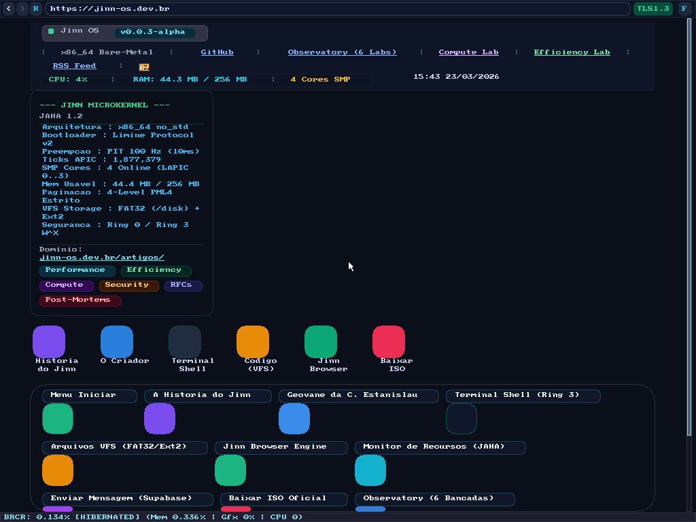
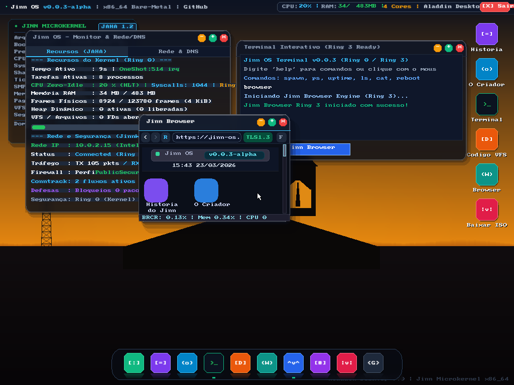

Renderização Moderna em #![no_std]: Stylesheets HTTPS Remotos, Cascata CSS Composta, Tailwind Nativo e Flexbox Wrapping no Jinn Browser
Após assegurar a autenticação criptográfica TLS 1.3 (X.509/SAN, RSA-PSS RFC 8017 e ChaCha20-Poly1305) em portais reais, o próximo gargalo visível em execução no VirtualBox e QEMU era o próprio portal oficial https://jinn-os.dev.br (61.313 B + style.css de 10.154 B): sem busca remota de CSS, suporte a utilitários Tailwind nem regras compostas como .os-window.hidden, modais inteiras vazavam como texto monocromático vertical. Esta atualização remodela o motor MiniCss, o DomArena e o layout Flexbox/Grid em apps/ola-mundo/src/browser.rs e main.rs com alocação estática exclusiva em .bss.
1. Diagnóstico do Gargalo Visual Anterior
A auditoria conjunta do DOM real de web/index.html (886 elementos entre tags e nós de texto, profundidade 10 e strings class="..." de até 238 bytes) contra browser.rs identificou seis causas raiz objetivas:
-
Ausência de pre-fetch remoto para
<link rel="stylesheet">: o parser consultava exclusivamenteread_css_file_from_vfscom buffer de stack de4096bytes, colidindo inclusive com/disk/STYLE.CSSlocal (435 B) e ignorando completamentehttps://jinn-os.dev.br/style.css(10.154 B). -
Limites estáticos inferiores ao DOM moderno:
MAX_DOM_NODES = 512,DomNode.class_attr = [u8; 64],MAX_CSS_RULES = 128,MAX_RENDER_LINES = 512eMAX_RENDER_BOXES = 64truncavam nós posteriores do portal e cortavam tokens Tailwind após o 63º byte. -
Falta de resolução de
:root, RGBA compositado e seletores compostos: declaraçõesvar(--panel-bg), fundos translúcidosrgba(255,255,255,0.05)(que caíam para branco sólido ou nulo), unidades relativas (100vw/100vhinterpretados como100 px) e seletores compostos (.os-window.hidden,.whisker-menu.hidden) não correspondiam na cascata. -
Inexistência de fallback nativo para utilitários Tailwind e breakpoints: sem execução do runtime JS de
cdn.tailwindcss.com, classes comohidden,md:flex,lg:block,bg-slate-900/60,border-emerald-500/30erounded-xlnão produziam efeito visual. -
Divisão rígida em colunas iguais no Flexbox horizontal: containers com
display: flexdividiamavail_w / visible_childrensem estimativa de largura natural nem quebra por linha (flex-wrap), comprimindo links de navegação e derrubando rótulos em 1 caractere por linha; ademais, containers com filhos vazios (<i data-lucide>) não avançavam*curr_ypela altura explícita CSS, causando sobreposição vertical entre ícones e legendas.
2. Melhorias Arquiteturais Implementadas (#![no_std] em .bss)
Cache Remoto de CSS & Anti-Downgrade (main.rs / browser.rs)
REMOTE_CSS_CACHEestático em.bss(4 x 32.768 B=128 KiB) indexado por hash FNV-1a da URL resolvida e bruta, maisVFS_CSS_SCRATCH(32 KiB).prefetch_page_stylesheetsextrai até4<link rel="stylesheet">por documento viaextract_next_stylesheet_hrefantes do parsing do DOM, integrando disco (BrowserCacheStore) e TLS 1.3.- Bloqueio estrito de downgrade
https:// → http://em subrecursos<link>com telemetria[BROWSER-SEC].
Capacidades .bss & Invariante JAHA Zero-Alloc
MAX_DOM_NODESampliado para1152,MAX_DOM_CHILDREN = 24,parent_stack = 24eclass_attr = [u8; 256]sem nenhuma alocação na stack ou heap.MAX_CSS_RULES = 256,MAX_CSS_VARS = 32,MAX_RENDER_LINES = 1024,MAX_RENDER_BOXES = 256eMAX_CLICK_REGIONS = 512mantidos emBROWSER_SESSIONestático.- Integridade de contabilidade validada com
0 bytes discrepancyna suíteJAHA 1.2.
Motor MiniCss & Utilitários Tailwind Nativos
- Extração de
:root(--panel-bg,--window-bg, etc.), expansãovar(...)em cascata e remoção automática de!importante blocos aninhados@media/@keyframes. - Compositor
rgba(..., alpha)mesclado sobre canvas escuro#0B0F19(blend_over_rgb), extração de fallback em gradientes e conversão fracionária derem/emignorandovw/vh/%. - Matcher composto
selector_matches_nodeaplicado por faixas de especificidade, herança de cor do nó pai,border_sides(border-b/border-t/border-l), supressão de reflexos commask-imagee utilitários Tailwind base + breakpoints responsivos (sm:≥480px,md:≥600px,lg:≥680px).
Flexbox Wrapping, Grid & Aberturas Interativas
estimate_subtree_widthsomando filhos inline/flex para distribuição proporcional e quebra de linha automática (flex-wrapegrid-cols-N) sem cortar letras finais das pílulas.- Avanço vertical consistente de
*curr_ypela altura explícita CSS (desktop-icon-box,dock-icon) e supressão de sublinhado interno em links dentro de badges preenchidos. - Extração declarativa de
data-open-windowe fechamento via.win-btn.closeno despacho de clique do navegador.
3. Antes vs. Depois em VirtualBox e QEMU

https://jinn-os.dev.br carregava via TLS 1.3, porém sem pre-fetch de style.css, sem cascata composta para .os-window.hidden e sem Tailwind nativo — despejando modais ocultas como texto vertical monocromático.

F11 (1024x768, QEMU): painel superior com métricas e links alinhados, card Conky HUD (--- JINN MICROKERNEL --- JAHA 1.2) com as 6 pílulas das bancadas, grade de atalhos sem sobreposição e dock inferior sobre fundo Obsidian #0B0F19.

300x180, QEMU): breakpoints responsivos preservam o emblema v0.0.3-alpha, relógio e atalhos principais sem esmagar colunas nem invadir BRCR.
4. Validação E2E de Segurança, Memória e Portais Reais
-
14/14 sites reais em
test_x509_sites_e2e.py: carregamento completo via TLS 1.3/HTTP fallback paragoogle.com,github.com,en.wikipedia.org,news.ycombinator.com,example.com,jinn-os.dev.br(61.313 B+style.css10.154 B+valid-rss-rogers.png2.044 B),frogfind.com,68k.news,pudim.com.br,www.kernel.org,www.rust-lang.org,www.cloudflare.com,www.mozilla.orgeg1.globo.com. -
10/10 cenários no
Ciclo 1(test_ciclo1_security_observability_e2e.py): bloqueio de divergência SAN/CN, adulteração deCertificateVerify, redirecionamento302e subrecursos HTTP em páginas HTTPS, seloHTTP (Sem TLS)no fallback explícito e medição[DIAG-BENCH]das syscalls 88/97 (7.0–17.2 μs). -
Auditoria de memória
JAHA 1.2(test_jaha_12_integrity.py):INVARIANT PASSED (0 bytes discrepancy)mesmo após expansão dos buffers estáticos de DOM, regras CSS, linhas e caixas de renderização em.bss.
5. Limitações Conhecidas
O motor atual destina-se à renderização determinística de documentos estilizados em ambiente #![no_std], não executando runtime ECMAScript completo (como arraste livre de janelas position: fixed por z-order em coordenadas absolutas, temporizadores setInterval ou compilação JIT do cdn.tailwindcss.com) nem escalando fontes vetoriais dinâmicas além da grade bitmap fixa (8x12 px). Todos os ensaios desta rodada foram validados em emulação QEMU e comparados visualmente à captura prévia em VirtualBox.
Jinn Engineering Observatory • Semântica & Colaboração Aberta
Domínios Técnicos & Ecossistemas Relacionados
Badges clicáveis indexados por bancada, domínio de engenharia e organizações/padrões do Radar Expandido (Nível B contextual, sem endosso implícito):
Aplicabilidade: Indústria, Uso Doméstico e Servidores
Gateways industriais, coletores SCADA e frotas com links intermitentes via SharedRings SPSC (4096 B), HotRouteTable e diagnóstico de falha por estágio.
Navegação ágil com DNS 3 camadas (/disk/hosts → LRU → upstream) e fallback resiliente de conectividade.
Caminhos críticos IPC lock-free e observabilidade de pilha TCP/TLS 1.3 no_std com inspeção direta por syscalls.
Chamada Aberta para Pilotos (Indústria Local, Universidades & Setor Público Ético)
Convidamos integradores de automação industrial, laboratórios universitários de arquitetura/SO e instituições públicas eticamente responsáveis a reproduzirem estes experimentos em silício real (fechando lacunas emulador vs. hardware da Tabela B) ou propor estudos-piloto com Jinn OS, Aladdin e JHCS.
![[Valid RSS]](/valid-rss-rogers.png "Validate my RSS feed")